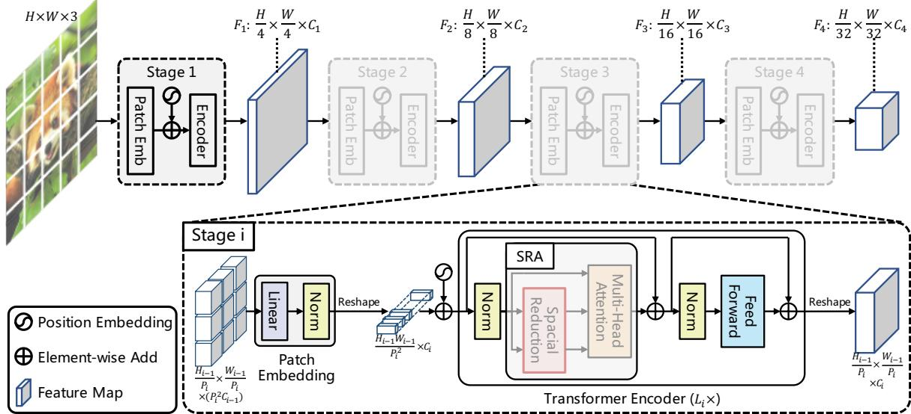
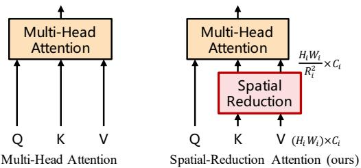

🎯 主题：视觉主干网络（被 SLAM 论文当特征提取器的那一层）👥 作者：Liu Ze 等（Swin）／ Wang Wenhai 等（PVT）📅 2021 · Swin Transformer: Hierarchical Vision Transformer using Shifted Windows；Pyramid Vision Transformer: A Versatile Backbone for Dense Prediction without Convolutions
原图注（Fig. 1）：(a) The proposed Swin Transformer builds hierarchical feature maps by merging image patches (shown in gray) in deeper layers and has linear computation complexity to input image size due to computation of self-attention only within each local window (shown in red). It can thus serve as a general-purpose backbone for both image classification and dense recognition tasks. (b) In contrast, ...（(b) 描述的是此前 ViT 那类「单尺度柱状结构」的对照） 怎么看这张图：(a) 里灰色的方块是 patch，注意它越往深处越大——那是 Patch Merging 在把 2×2 的 patch 合并成一个；红框就是局部窗口，注意力只在红框里发生。(b) 是反面对照：单一分辨率、没有层次。看这张图只要抓住一件事：红框（窗口）和灰块（合并）分别对应前面讲的第二招和第一招。这张图在画什么：两个 8×8 的特征图。左图把注意力关在四个 4×4 的蓝框里（实际默认是 7×7，这里画 4 是为了看清）；右图把窗口边界整体挪了两个格子（画成绿色虚线），于是原来看不到彼此的邻居被圈进了同一个窗。 怎么看这张图：① 先看左图四个蓝框——框内连线，框与框之间完全不通信；② 再看右图那两条绿色虚线——它们没有和左边对齐，而是错开了；③ 盯住中央那一片：它跨过了左图两个蓝框的交界，交界两侧的 token 现在能互相看见了；④ 四角那些浅绿的 2×2 小块是移位带来的「边角碎块」，原文用循环移位加掩码把它们高效处理掉，所以窗口总数并没有变多。 要记住的一句话：「线性成本」和「跨窗连接」本来是矛盾的，Swin 用一次整体错位同时拿到了两个。
原图注（Fig. 2）：An illustration of the shifted window approach for computing self-attention in the proposed Swin Transformer architecture. In layer l (left), a regular window partitioning scheme is adopted, and self-attention is computed within each window. In the next layer l + 1 (right), the window partitioning is shifted, resulting in new windows. The self-attention computation in the new windows cro...（后续描述的是新窗口跨越了旧窗口边界） 怎么看这张图：这张就是原论文版的「移位窗口」示意图，和我上面那张自绘图的逻辑完全一样，只是它画的是真实的 $M=7$ 尺度。左边是第 $l$ 层的常规划分，右边是第 $l+1$ 层的移位划分。建议对着看：先在我那张图上理解道理，再用这张图确认尺度。原图注（Fig. 3）：(a) The architecture of a Swin Transformer (Swin-T); (b) two successive Swin Transformer Blocks (notation presented with Eq. (3)). W-MSA and SW-MSA are multi-head self attention modules with regular and shifted windowing configurations, respectively. 怎么看这张图：(b) 子图要重点看：它画的是连续两个 block，第一个里是 W-MSA、第二个里是 SW-MSA——这正是公式（3）那四行式的图像版本，也印证了「一层常规、一层移位」的交替节奏。每一路都是「LayerNorm → 注意力 → 残差加回」，再「LayerNorm → MLP → 残差加回」。层数配置也值得记：Swin-T 的四个 stage 是 {2, 2, 6, 2} 个 block。
2. PVT v1：不关窗户，而是把 K/V 压小
同年（2021）的另一篇是 PVT，完整标题是 Pyramid Vision Transformer: A Versatile Backbone for Dense Prediction without Convolutions。请注意标题最后那五个词——「without Convolutions」（免卷积）是标题的一部分，这一点后面第 4 节要专门讲，因为课程清单在这里出过一处错。
原图注（Fig. 1）：Comparisons of different architectures, where “Conv” and “TF-E” stand for “convolution” and “Transformer encoder”, respectively. (a) Many CNN backbones use a pyramid structure for dense prediction tasks such as object detection (DET), instance and semantic segmentation (SEG). (b) The recently proposed Vision Transformer (ViT) [12] is a “columnar” structure specifically designed for image...（(c) 为 PVT 的金字塔 Transformer 结构） 怎么看这张图：这张图一张就能顶前面那段铺垫。(a) 是 CNN 的金字塔，(b) 是 ViT 的柱状——它的输出只有一种尺度，所以正文才会说 ViT 对检测/分割不友好；(c) 是 PVT：既有金字塔的形状，内部又是 Transformer 编码器。注意“Conv”和“TF-E”两个缩写：CNN 那支靠卷积做降采样，PVT 那支靠 patch embedding。

原图注（Fig. 3）：Overall architecture of Pyramid Vision Transformer (PVT). The entire model is divided into four stages, each of which is comprised of a patch embedding layer and a L-layer Transformer encoder. Following a pyramid structure, the output resolution of the four stages progressively shrinks from high (4-stride) to low (32-stride). 怎么看这张图：对着图数四个 stage，每个 stage 都是「patch embedding 层 + $L$ 层 Transformer encoder」的组合。重点看左上到右下这四级的分辨率标注：从 4-stride 一路缩到 32-stride——浅层图大（给分辨率），深层图小（给语义）。和 Swin 那张 Fig. 3 并排看，会发现两篇的骨架形状几乎一样，差别全在「注意力怎么算」这一层。
这张图在画什么：左格是标准多头注意力，Q、K、V 三条一样长；右格是 PVT 的 SRA，Q 保持原长，K 和 V 被压成了短短一截（虚线框标出它们原来的长度）。 怎么看这张图：① 先盯住右边那条虚线框——它代表 SR 之前的 K/V 有多长；② 再看里面那根短短的实心条，那就是 SR 之后剩下的；③ 注意 Q 那条完全没有被压，这是 SRA 最关键的一笔；④ 打分表的行数是 Q 的长度、列数是 K 的长度，列被压短了，面积自然跟着缩。⑤ 和上面 Swin 那张图对照着看：Swin 是把「打分表切成小块分别算」，PVT 是「把打分表的列变短」。 要记住的一句话：两条路都在给注意力「降本」，但一个是局部化，一个是稀疏化——这是本季信息密度最高的一个对照点。

原图注（Fig. 4）：Multi-head attention (MHA) vs. spatialreduction attention (SRA). With the spatial-reduction operation, the computational/memory cost of our SRA is much lower than that of MHA. 怎么看这张图：这张是原论文版的 MHA 与 SRA 对照，和我上面那张自绘图讲的是同一件事，但它是按真实的张量形状画的。看的时候盯住两点：① K、V 那两条在进 Attention 之前被 SR 缩过了；② Q 没有。原文用这张图来说明「计算与显存开销低得多」，具体低多少，正文给的量是 $R_i^2$ 倍。
Swin 的作者说自己「追求的是速度-精度权衡而不是绝对精度」，这句话在 SLAM 语境下为什么特别重要？
展开查看答案
因为 SLAM 是实时系统。第八季动态环境块里 Mask R-CNN 单图 195 ms（约 5 fps）就已经被抱怨「跑不到帧率」，一个骨干如果只追精度不要速度，后面整条流水线都没法实时。所以在 SLAM 里选骨干，第一步往往不是比谁 AP 高，而是先划一条延迟预算线。原文里还有一处很具体的速度-精度对立可以引：PointPillars 只用 16 ms（约 60 Hz），但它的精度普遍不如体素方法——这条对照下一课（0196）会展开。
「免卷积」这个招牌，为什么不能直接当成定论来记？
展开查看答案
因为 PVT v1 的续作 PVTv2（不在本语料库）恰恰是靠把卷积要素加回来取得提升的。一篇论文的标题说的是它当时的路线选择，不是这条路线最终的结论。判断一个「without X」是不是终局，要看后续工作：如果续作把 X 又加回来，说明那个 X 里有当时没被替代的价值。这个习惯对读 SLAM 论文同样适用——很多「不用 IMU」「不用回环」的方案，续作都会补回去。